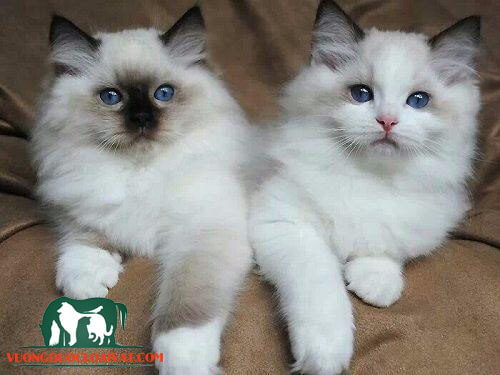
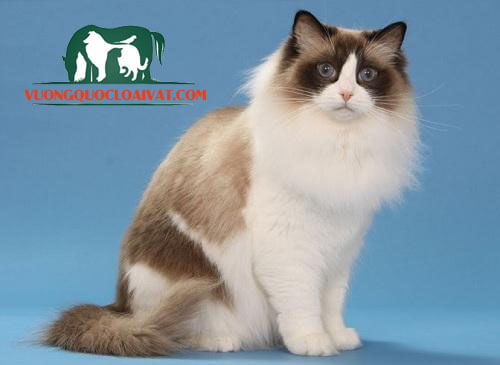

Nguồn gốc giống mèo Ragdoll
Mèo Ragdoll là giống mèo thuần chủng đến từ cường quốc kinh tế lớn nhất thế giới – nước Mỹ xinh
đẹp.
Những chú mèo Ragdoll không chỉ thu hút ánh nhìn từ vẻ ngoài uyển chuyển mà còn thu hút bởi nét tính
cách nhẹ nhàng tinh tế và vô cùng thông minh
Những chú mèo Ragdoll là kết quả của sự lai tạo giữa các giống mèo: mèo hoang, mèo Ba Tư, mèo
Birman, mèo Burmese và mèo Siamese.
Sau đó, bà Ann Baker tự mình lập và đăng ký thương hiệu mèo “Ragdoll” và lập nên hội mèo Ragdoll
quốc tế. Cùng với đó thắt chặt tiêu chuẩn những người muốn nuôi loài mèo.
Năm 1975, một vài người tách khỏi hiệp hội của bà để giúp những chú mèo Ragdoll được công nhận chính
thức và nhân giống ra toàn thế giới.
Đặc điểm ngoại hình mèo Ragdoll
Mèo Ragdoll là một trong những giống mèo nuôi trong nhà có thân hình to lớn nhất. Một chú mèo
Ragdoll đực khi trưởng thành có thể nặng từ 5,5 – 9 kg, mèo cái trưởng thành thì có cân nặng thấp
hơn một chút khoảng 3,5 – 7kg.
Tỷ lệ cơ thể của những chú mèo Ragdoll rất cân đối. Phần đầu tròn to, mõm hơi dài và nhọn, đôi tai
mỏng dựng đứng.
Điểm đặc biệt nhất là đôi mắt màu ximages dương của chúng (màu mắt ximages dương bóng thường là màu mắt
được nhiều người tìm mua và có mức giá thành cao hơn các màu thông thường). Ngoài ra, còn có mèo
Ragdoll mắt tím và ximages ngọc.
Hầu hết những chú mèo Ragdoll đều có phần ngấn mỡ ở dưới bụng, cho nên bạn đừng vội lo sợ chúng bị
bệnh béo phì.
Mèo Ragdoll có bộ lông dài, rậm, mềm mại che phủ kín toàn bộ cơ thể của chúng. Bộ lông của mèo
Ragdoll rất đa dạng về mà sắc: màu trắng, màu kem, màu ximages xám, màu socola và 1 màu lông được pha
trộn với nhiều màu sắc khác nhau.
